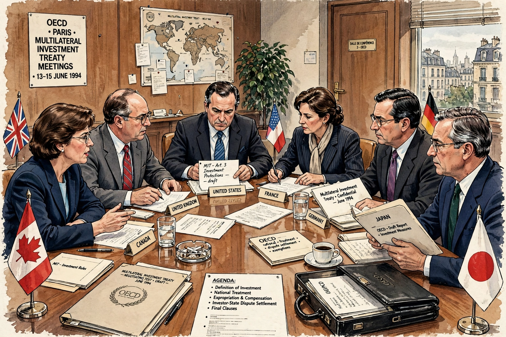

The Multilateral Agreement on Investment (MAI) was a draft agreement negotiated in secret between members of the OECD from 1995 to 1998. It sought to establish a new body of universal investment laws that would grant corporations unconditional rights to engage in financial operations around the world, without interference from governments.

| Multilateral Agreement on Investment | |
|---|---|
| Negotiated | 1995–1998, OECD |
| Status | Abandoned 1998 |
| Subject | Foreign direct investment liberalization |
Negotiations began in 1995 aiming for national treatment, abolition of performance requirements, and investor-state dispute settlement. A leaked draft in 1997 triggered a global campaign by NGOs, labor and environmental groups who called it a charter of rights for corporations threatening regulation, culture and the environment.
France withdrew in October 1998 after the Lalumière Report criticized threats to sovereignty and culture; the OECD announced in December 1998 that negotiations would not continue. The episode became an early landmark of the anti-globalization movement and influenced later debates over trade agreements.